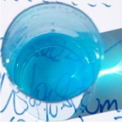
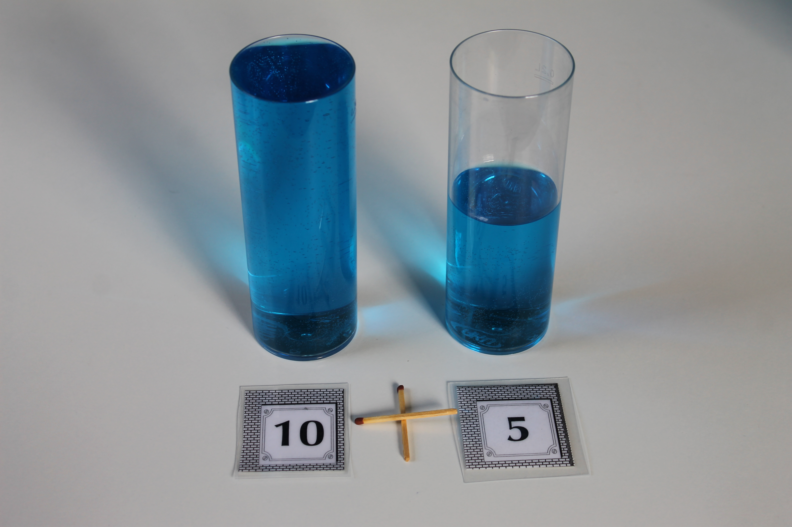
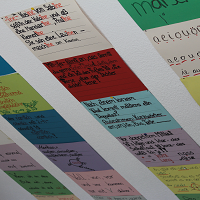
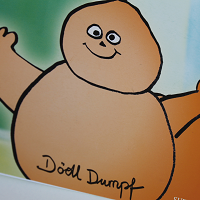
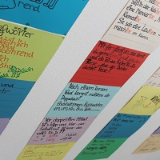
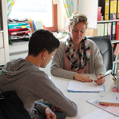
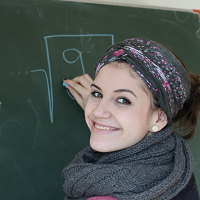

Was ist Dyskalkulie?
Eine Dyskalkulie ist eine Rechenschwäche, die durch herkömmliche
Nachhilfe meist nicht behoben werden kann. Die Eltern werden in
erster Linie durch schlechte Schulleistungen auf diese Schwäche
aufmerksam. Auch häufiges Üben bringt nicht den erwünschten
Erfolg.
Woran
erkenne ich, ob mein Kind rechenschwach ist?
- ihr Kind rechnet zählend (erkennt die Zahl 7 nur als Teil
einer Zahlenreihe)
- häufiges Verrechnen um 1 (12-5=8)
- der Zehnerübergang als häufige Fehlerquelle
- Rechnen mit den Fingern (5+3 wird an den Fingern
abgezählt, genau wie 3+5)
- häufiges Verdrehen der Zahlenschreibweise (45 statt 54)
- über Zahlen bestehen nur abstrakte und keine konkreten
Vorstellungen (Bsp: Was kann ich mir für 35 € kaufen?)
Handeln Sie früh. Eine Dyskalkulie „wächst“ sich nicht von alleine
heraus.
Eine Dyskalkulietherapie wird nur im
Einzelunterricht angeboten.
Wie funktioniert die Wasserglasmethode® ?
Die Wasserglasmethode
® ist weltweit die erste Methode, die ein
Gesamtpaket zum Erlernen der Mathematik bietet. Sie ist
wissenschaftlich fundiert, erfolgreich und leicht erlernbar. Der
geniale wie einfache Ansatz der Wasserglasmethode
® ist schnell
erklärt:
Statt eindimensionalem, langweiligem und
erfolglosem Zählen werden alle Zahlräume durch das Einfüllen von
Wasser in zylindrische Gläser in einer vierdimensionalen Raumzeit
dargestellt, erforscht und dadurch verstanden.
Viele
Untersuchungen aus der kognitiven Psychologie haben in den letzten
20 Jahren belegen können, dass der Mensch generell konkrete,
logische Probleme besser und effizienter lösen kann als abstrakte.
Das heißt, dass wir durch konkrete Erfahrungen – vorausgesetzt,
diese sind logisch korrekt –sehr viel leichter abstrahieren und
transferieren können.
Das Schütten von gefärbtem Wasser hat
einen hohen spielerischen Anreizcharakter und ist deshalb für die
Frühförderung ebenso geeignet, wie für die Begabtenförderung.
Rechenschwache Schüler erlangen damit mühelos Einsichten in mathematische Operatoren.
Die Wasserglasmethode
® hat sich
jedoch ganz besonders in der Sekundarstufe 1 bewährt, denn man kann
mit ihr große und dezimale Zahlenräume, das Bruch- und
Prozentrechnen und sogar Funktionen 1., 2. Grades,
trigonometrische- und Wachstumsfunktionen anschaulich darstellen.
So erlangen rechenschwache Schüler ein echtes Verständnis für die
Mathematik und müssen nichts mehr auswendig lernen und auch nicht
mehr viel üben.
Im Laufe der Zeit wird das Schütten als
Handlung durch kognitive innere Bilder abgelöst und versetzt
rechenschwache Kinder in die Lage, oftmals besser und schneller im
Kopf zu rechnen als ihre mathematisch unauffälligen Alterskollegen.

Zahlen werden zu
räumlichen Objekten. Weitere Informationen zur
Erfinderin, Frau Dipl.-Psych. Angelika Schlotmann und zur
Forschungsliteratur finden sie unter
www.wasserglasmethode.com
Mathematikförderung
Zu Beginn einer Förderung kann bei Bedarf für ihr Kind ein
Förderplan, in Bezug auf vorangehende diagnostische Untersuchungen
erstellt werden. Am individuellen Lernstand ihres Kindes wird
angeknüpft. Mathematische Lücken werde geschlossen und/oder der
aktuelle Lernstoff wird begleitet.
Deutschförderung

Lese-Rechtschreibschwäche (LRS-Therapie)
Aufgrund diagnostischer Gutachten oder einer internen
Testung in der PFP1-10* wird der Lernstand und die Schwere der
Lese-Rechtschreibschwäche festgestellt. Es erfolgt eine
individuelle Therapie auf der Grundlage des Kieler-Lese- und
Rechtschreibmodells, sowie das Lernen nach der FRESCH-Methode
(Freiburger Rechtschreibschule). Es wird immer wieder individuell
auf den aktuellen Lernstand ihres Kindes eingegangen, um somit die
schulische Leistung zu verbessern.

Rechtschreibförderung
Zu Beginn der Förderung wird ermittelt, welche
Fehlerschwerpunkte ihr Kind in der Orthographie aufweist. Auf
Wunsch kann ein Rechtschreibtest* durchgeführt werden. Die
Fehleranalyse bildet die Grundlage der folgenden Förderung.
Individuell wird mithilfe von Rechtschreibregeln, Karteikarten,
Arbeitsblättern und dem Arbeiten am PC die Rechtschreibleistung
ihres Kindes stetig verbessert. *kostenpflichtig (49 Euro)

Aufsatzförderung
Das Schreiben von Bildergeschichten, Erzählungen, Fabeln,
Berichten und vielem mehr, werden zusammen mit ihrem Kind
individuell geübt. Ihr Kind wird gezielt auf das nächste
Aufsatzthema der Schule vorbereitet, um die Schulnote zu
verbessern.

Grammatikförderung
Dies ist eine spezielle Vorbereitung auf Grammatikarbeiten in der
Schule.
Die Rechtschreib-, Aufsatz- und
Grammatikförderung kann auch als Kombination gebucht werden.
Sprachförderung

Sprachförderung für Kinder ab 4 Jahren
Hier ein kleiner Auszug aus den Zielen des Förderplans:
- Sprechfreude wecken und stärken
- Motivation zur Kommunikation
- Schulung der Ausdrucksfähigkeit und Artikulation
- Erlernen und Festigen der Sprachstruktur
- Wortschatzbereicherung
- Unterstützung der Schulreife
- Erleichterung im Schulalltag durch erhöhte Sprechsicherheit und gutes Sprachverständnis
Die Förderung
geschieht gemäß dem Alters- und Entwicklungsstand der Vor- und
Grundschulkinder ganzheitlich und spielerisch.
Preise